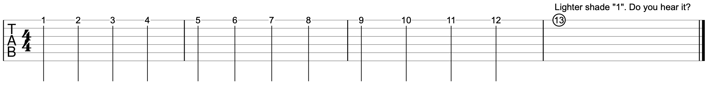
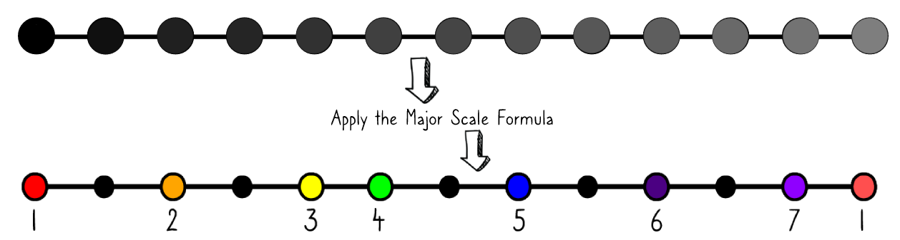
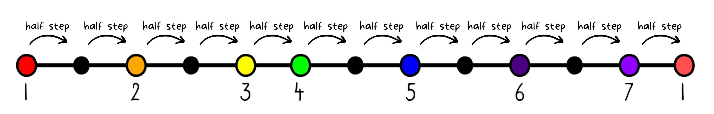
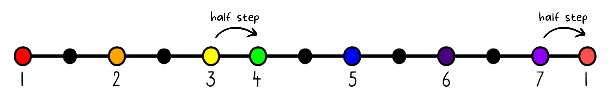
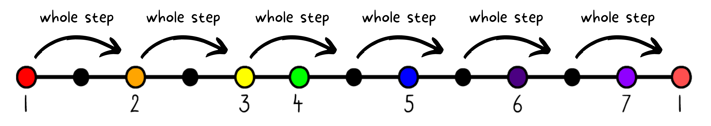

Chapter 7
Music Theory: The Major Scale creates a palette of 7 colors (notes)
If notes repeat every 12 frets, then that means there are only 12 notes in total. You don’t have to know the names of the notes just yet to understand this concept because you can hear it. Play each fret on any string (but stay on that string). Start with the first fret. Here is an example on the high E string:

As you play each fret, count the fret 1, 2, 3…..10, 11, 12… and once you reach fret 13, the sound produced is the lighter shade of “1”. By the way, the open string is considered fret 0.
So, we have 12 notes in total. But how can we use this to make music?
Over the course of history, we have discovered a way to create a “palette” of notes to choose from in order to create songs. When you “paint” with this palette to create a melody or a song, it will sound great! In total, we will pick just 7 notes (colors).

The first step for creating this palette is choosing the “tonic” note or “key-note”. Any note will do. For example, you could simply choose E as played by the low E string (or high E string). After you choose this note, you must follow this “interval sequence” to create your musical palette.

An interval is the measurement of distance between any two notes. These numbers represent the number of frets that you must move to find the next note for your palette. The 221-2221 interval sequence is easy to remember because it looks like a phone number!
We’ll first think theoretically (away from the fretboard). After picking your first note, move up 2 notes and use that note as the 2nd note in the palette. Next, move up another 2, then use that note as the 3rd note of the palette. And so on. I will also number each note as I go.

The rainbow-colored notes are what make up the “Major Scale”. The 221-2221 interval sequence can also be considered the “Major Scale Formula”. The black dots are still notes but they are not part of our “palette”. Again, the actual musical term for this “palette” is The Major Scale.
The Half Step Interval
When you move from one note to the next (or one fret to the next), you are performing what is called a “half step”. There is a half step between ANY note and the very next note.

But in the Major Scale specifically, there is only a half step between notes 3 to 4 and between notes 7 and the “lighter shade” 1. Half steps just naturally occur from 3–4 and from 7–1. In the 221-2221 sequence, the “1” represents a half step (“H”).

The Whole Step Interval
A whole step is 2 half steps.

Here are the whole steps in the Major Scale (there are 5):

In the 221-2221 sequence, the “2” represents a whole step (“W”).
221-2221 or WWH-WWWH
Another common way to describe the Major Scale formula is to use a series of W’s and H’s (whole steps and half steps). 2 = a whole step. 1 = a half step. Therefore 221-2221 becomes WWH-WWWH. You may have already seen this in several online sources. If you use W’s and H’s, I think it’s a little easier to memorize if you separate it out like this WWH – W – WWH. Now you can see there are two “WWH” chunks and they are connecting with a single “W”.